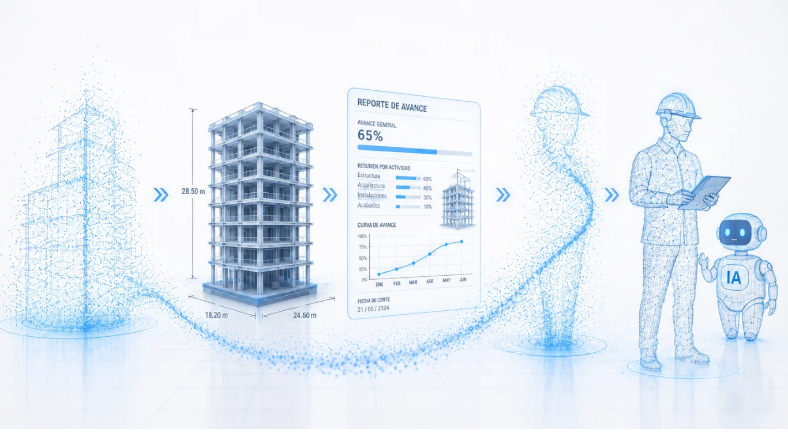

PERFIL DIGITAL EN OBRA
01 / 05
01
OBSERVA LA REALIDAD
El punto de partida sigue siendo la obra: comprender qué está ocurriendo antes de digitalizarlo.
← → NAVEGAR · ESPACIO PAUSA

El punto de partida sigue siendo la obra: comprender qué está ocurriendo antes de digitalizarlo.